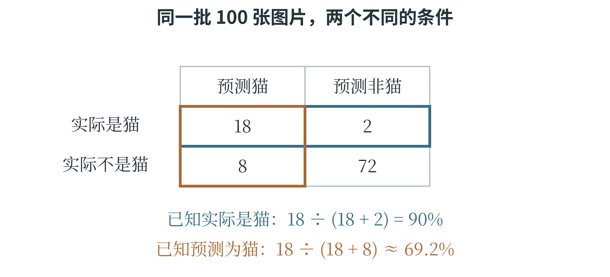
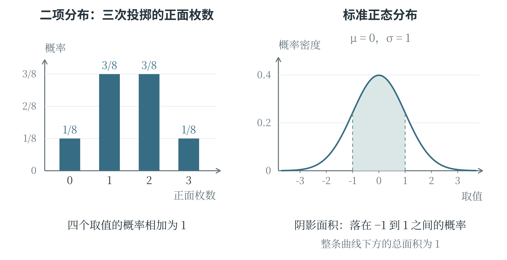

3.5 概率与常见分布
怎样给随机结果分配概率
掷一枚骰子之前，可以列出可能出现的点数，却不能事先确定这一次是哪一个。这类在相同条件下重复进行、结果仍可能不同的过程，称为随机试验。一次试验所有可能结果组成的集合叫作样本空间，常记作 \(\Omega\)。对普通六面骰子来说，\(\Omega=\{1,2,3,4,5,6\}\)。我们关心的一组结果称为事件，例如“出现偶数”对应集合 \(\{2,4,6\}\)。事件可以只含一个结果，也可以包含多个结果。
概率表示事件发生的可能性大小，取值在 0 与 1 之间，也可以写成百分数。概率越接近 1，发生的可能性越大；越接近 0，发生的可能性越小。一定会发生的事件叫作必然事件，概率为 1；不可能发生的事件叫作不可能事件，概率为 0。
假设骰子是均匀的，六个点数出现的可能性相同，那么出现偶数的概率为 \(3/6=1/2\)。这种“满足要求的结果数除以全部结果数”的办法叫作古典概率的计算方法，使用它的前提是结果有限，且各个基本结果等可能。满足这些条件的概率模型称为古典概型。
这里 \(P(A)\) 表示事件 \(A\) 的概率。计算前，先检查各个基本结果是否等可能。一个袋子中有 9 个红球、1 个蓝球，球除颜色外相同，每个球被抽中的机会相等。虽然颜色只有两种，红色和蓝色却不是各占一半，抽中红球的概率是 \(9/10\)。按十个球计数可以使用上述方法，按两个颜色名称直接计数就会出错。
在重复试验中，某事件发生的次数除以试验总次数，称为它的频率。投掷均匀硬币 20 次，出现 12 次正面，正面频率是 \(12/20=0.6\)；这不意味着硬币正面的概率已经变成 0.6。概率描述试验条件下的可能性，频率是某批实际记录的结果。在条件保持一致的情况下，大量重复试验的频率通常会在概率附近逐渐稳定，但不保证每增加一次试验就更接近概率，也不保证短期内正反面次数相等。
事件之间的关系
事件本身是集合，因此可以使用 3.1 节中的交集、并集与补集。“\(A\) 且 \(B\)”对应 \(A\cap B\)，“\(A\) 或 \(B\)”对应 \(A\cup B\)。在同一次试验中不可能同时发生的两个事件，称为互斥事件。例如，一次掷骰子“得到 1 点”和“得到 2 点”互斥；“得到偶数”和“得到大于 3 的点数”不互斥，因为 4 和 6 同时满足两项条件。计算“至少满足一项”的概率时，也要扣除重复计入的部分：
事件的补集表示它不发生，常记作 \(A^c\)，因此 \(P(A^c)=1-P(A)\)。例如，掷一次均匀骰子，没有出现 6 点的概率为 \(1-1/6=5/6\)。这条关系在“至少发生一次”这类问题中尤其方便，往往先计算“一次也没有发生”，再用 1 减去它。
如果知道一个事件发生与否，不改变另一个事件发生的概率，就称这两个事件相互独立。分别投掷两枚均匀硬币，第一枚出现正面，不改变第二枚出现正面的概率；两枚都出现正面的概率是 \((1/2)\times(1/2)=1/4\)。对于相互独立的事件，可以把各自的概率相乘来计算共同发生的概率。互斥与独立不可混淆：同一枚骰子得到 1 点后，就不可能再在这次投掷中得到 2 点，两事件互斥，却不独立。
再来看抽球。抽取后是否放回，也可能改变独立性。袋中有 2 个红球、1 个蓝球，第一次抽到红球后不放回，袋中只剩 1 红 1 蓝，第二次抽到红球的概率变为 \(1/2\)，与第一次的 \(2/3\) 不同。若每次抽取后都放回、充分混合，并保证每个球仍等可能被抽中，各次抽取就可以按独立试验处理。
两次试验是否独立，要看试验条件，不能只看次数。
设某种尝试每次成功的概率都是 0.2，三次尝试相互独立。三次都失败的概率是 \(0.8^3=0.512\)，因此至少成功一次的概率为 \(1-0.512=0.488\)。“恰好成功一次”是另一回事：成功可能出现在第 1、2 或 3 次，这三种情况互斥，每种概率都是 \(0.2\times0.8\times0.8\)，合计为 \(3\times0.2\times0.8^2=0.384\)。0.488 还包含成功两次、三次的情况，所以比 0.384 大。
加上条件以后，概率怎样改变
已知某个事件 \(B\) 已经发生，再求事件 \(A\) 的概率，称为条件概率，记作 \(P(A\mid B)\)，竖线右边写已知条件。它相当于缩小观察范围：不再面对整个样本空间，而只在满足条件 \(B\) 的结果中考察 \(A\)。只要 \(P(B)>0\)，便有：
例如，一批 100 张图片中有 20 张猫的图片、80 张非猫图片。某识别程序把其中 18 张猫图片判为“猫”，又把 8 张非猫图片误判为“猫”。从这 100 张图中等可能地抽取一张，已知它实际是猫，程序判为“猫”的概率为 \(18/20=90\%\)；但已知程序判为“猫”，图片实际是猫的概率为 \(18/(18+8)\approx69.2\%\)。两次计算都用到了 18 张正确识别的猫图片，分母却分别是实际猫图片的 20 张和被判为“猫”的 26 张。
条件的位置一变，问题也就变了。\(P(A\mid B)\) 通常不等于 \(P(B\mid A)\)，不能把“猫图片较容易被识别出来”直接理解成“被判为猫的图片几乎都是真的猫”。这正是人工智能评价中需要把不同指标分清的原因之一。
用分组人数看清条件概率
前面的猫图片例子可以画成四块：实际为猫且判断为猫的 18 张，实际为猫但判断为非猫的 2 张，实际非猫却判断为猫的 8 张，以及实际非猫且判断为非猫的 72 张。四块合起来是 100 张图片。图 3-8 把同一批记录按实际类别和预测类别分别分组。

若已知图片实际为猫，观察范围就是 18 与 2 所在的一行，分母为 20。若已知图片被判为猫，观察范围就是 18 与 8 所在的一列，分母为 26。分子都是共同区域的 18，回答的却是两种问题。可以先用笔圈出已知条件允许的范围，再在其中标出所求事件，条件概率的分子和分母便会清楚许多。
还可以改变总体组成来观察影响。保持识别表现为“猫中识别出 90%，非猫中误报 10%”，若另一批 100 张图片中实际有 50 张猫，那么预计正确识别 45 张，非猫中误报 5 张，被判为猫的图片中约有 \(45/(45+5)=90\%\) 确实是猫。这个比例与原来的约 69.2% 不同，因为实际类别的占比变了。这里用“预计”和“约”表示根据比例推算的结果，具体一次抽样仍可能波动。
解释识别指标时，分母中的那一组图片究竟是谁，和算出的百分数同样值得关注。
从单个事件到概率分布
如果把随机试验的结果用一个数表示，就得到随机变量。例如，投掷三枚硬币，用 \(X\) 表示出现正面的枚数，\(X\) 可能取 0、1、2、3。这里的大写 \(X\) 表示尚未确定的随机结果，某次试验结束后才得到具体数值。说明一个随机变量可能取哪些值，以及各个值或范围有多大概率，便是在描述它的概率分布。数据表记录已经观察到什么，概率分布描述在给定条件下各种结果有多大可能，二者应有所区分。只有有限个取值，或者可以逐个列出取值的随机变量，称为离散型随机变量。均匀骰子的点数就是一例，它在 1 到 6 的每个整数上都有 \(1/6\) 的概率，这种各个取值等可能的分布称为离散均匀分布。概率总和为 1，表示列出的取值已经覆盖全部可能结果。
还有些量可以在一段范围内连续变化，例如在理想化模型中记录一段等待时间。用连续范围描述取值的随机变量称为连续型随机变量。若在 0 到 10 秒内等可能地落入各段相同长度的时间区间，就得到这个区间上的连续均匀分布。落在 2 到 5 秒之间的概率为区间长度之比，即 \((5-2)/(10-0)=0.3\)。这里的“均匀”比较的是等长区间，不是给无穷多个单独时刻各分配同一个正概率。
计数问题中的二项分布
前面“三次尝试中成功几次”的问题，有四个关键条件：试验次数固定；每次只区分成功、失败两种结果；各次相互独立；每次成功的概率相同。在这些条件下，成功次数服从二项分布，也称二项式分布。设试验共 \(n\) 次，每次成功概率为 \(p\)，用 \(X\) 表示成功次数，那么 \(X\) 可以取 \(0,1,\ldots,n\)。
恰好成功 \(k\) 次，既要计算一种具体排列的概率，还要数清成功可以出现在哪些位置。三次恰好成功一次有“成功—失败—失败”“失败—成功—失败”“失败—失败—成功”三种排列。一般地，从 \(n\) 个位置中选出 \(k\) 个位置的方法数，称为组合数，常记作 \(C_n^k\)。另一种记法及计算公式如下：
感叹号在这里表示阶乘：\(n!=n\times(n-1)\times\cdots\times1\)，例如 \(4!=24\)，并规定 \(0!=1\)。组合数只关心选中了哪些位置，不区分选取位置的先后顺序。例如从 3 个位置中选 1 个有 3 种方法，选 2 个也有 3 种方法。因此，恰好成功 \(k\) 次的概率为：
先看 \(0<p<1\) 的情况：\(p^k\) 表示指定的 \(k\) 次都成功，\((1-p)^{n-k}\) 表示其余各次都失败，组合数则计入所有不同的位置选择。当 \(p=0\) 时，成功次数一定是零；当 \(p=1\) 时，成功次数一定是 \(n\)，可以直接按含义判断。三次独立尝试、每次成功概率 0.2，恰好成功一次的概率就是 \(3\times0.2\times0.8^2=0.384\)，与前面的逐种计算一致。
图 3-9 左图给出三次独立、公平的硬币投掷中正面枚数的分布。0 枚与 3 枚的概率各为 \(1/8\)，1 枚与 2 枚的概率各为 \(3/8\)，相加为 1。总共有八种等可能的正反面排列，却只有四种正面枚数，而且这四种枚数并不等可能。
若从袋中连续取球但不放回，导致每次概率改变，就不能直接套用二项分布公式。
数据的分散程度与正态分布
只知道中心在哪里，还不够描述一组数据。两组测量值的平均数都可能是 4，一组紧靠 4，另一组却散得很开。为了衡量这种分散程度，可以先求每个数与平均数的差，再把差平方后取平均，得到这组数据的方差。用前面学过的求和号表示为：
例如，2、4、6 的平均数为 4，三个差依次为 \(-2\)、0、2，平方后是 4、0、4，方差为 \(8/3\)。对方差取算术平方根，得到标准差，约为 1.63。若原始数值用厘米记录，方差的单位是平方厘米，标准差的单位重新回到厘米，更便于与原始数值比较。
标准差为零，表示各个数完全相同；比较同一种量、使用相同单位的数据时，标准差越大，表示数值离平均数越分散。这里计算的是整组给定数据的方差，分母为数据个数 \(n\)。
一种常见的连续分布，图形中间高、两侧低，左右对称，形似一口钟，称为正态分布。它用两个参数描述：\(\mu\) 表示均值，确定中心位置；\(\sigma\) 表示标准差，且 \(\sigma>0\)，控制分布的宽窄。标准差较小时，数值更集中在中心附近，曲线较窄、较高；标准差较大时，曲线较宽、较平。\(\mu=0\)、\(\sigma=1\) 的正态分布称为标准正态分布。

正态曲线的纵轴表示概率密度。它说明概率在数轴上的分布有多集中，曲线某点的高度本身不是随机变量恰好等于那个数的概率。要问数值落在某个区间内的概率，应看这个区间上方、曲线下方的面积；整条曲线下的总面积为 1。图 3-9 右图的阴影，对应标准正态随机变量落在 \(-1\) 与 1 之间的概率。现实中的数据不一定呈钟形。一些测量误差在适当条件下可以用正态分布近似描述，但图片中对象的个数、不同类别的占比等，往往需要别的分布。选择哪种分布，应结合数据怎样产生、能取哪些值来判断。